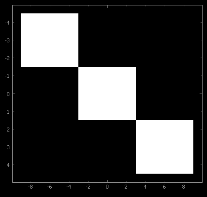

ImageItem¶
ImageItem displays images inside a GraphicsView, or a
ViewBox, which may itself be part of a PlotItem. It is designed
for rapid updates as needed for a video display. The supplied data is optionally scaled (see
setLevels()) and/or colored according to a
lookup table (see setColorMap() and
setLookupTable()).
Data is provided as a NumPy array with an ordering of either
col-major, where the shape of the array represents (width, height) or
row-major, where the shape of the array represents (height, width).
While col-major is the default, row-major ordering typically has the best performance. In either ordering,
a third dimension can be added to the array to hold individual
[R,G,B] or [R,G,B,A] components.
Notes¶
Data ordering can be set for each ImageItem, or in the global configuration options by
pyqtgraph.setConfigOption('imageAxisOrder', 'row-major') # best performance
An image can be placed into a plot area of a given extent directly through the
setRect() method or the rect keyword. This is internally realized through
assigning a QtGui.QTransform. For other translation, scaling or rotations effects that
persist for all later image data, the user can also directly define and assign such a
transform, as shown in the example below.
ImageItem is frequently used in conjunction with ColorBarItem to provide
a color map display and interactive level adjustments, or with
HistogramLUTItem or HistogramLUTWidget for a full GUI
to control the levels and lookup table used to display the image.
If performance is critial, the following points may be worth investigating:
Use row-major ordering and C-contiguous image data.
Manually provide
levelinformation to avoid autoLevels sampling of the image.Prefer float32 to float64 for floating point data, avoid NaN values.
Use lookup tables with <= 256 entries for false color images.
Avoid individual level adjustments RGB components.
Use the latest version of NumPy. Notably, SIMD code added in version 1.20 significantly improved performance on Linux platforms.
Enable Numba with
pyqtgraph.setConfigOption('useNumba', True), although the JIT compilation will only accelerate repeated image display.
Examples¶
tr = QtGui.QTransform() # prepare ImageItem transformation:
tr.scale(6.0, 3.0) # scale horizontal and vertical axes
tr.translate(-1.5, -1.5) # move 3x3 image to locate center at axis origin
img = pg.ImageItem( image=np.eye(3), levels=(0,1) ) # create example image
img.setTransform(tr) # assign transform
plot.addItem( img ) # add ImageItem to PlotItem
plot.showAxes(True) # frame it with a full set of axes
plot.invertY(True) # vertical axis counts top to bottom


- class pyqtgraph.ImageItem(image=None, **kargs)[source]¶
Bases:
GraphicsObject- __init__(image=None, **kargs)[source]¶
See
setOpts()for further keyword arguments and andsetImage()for information on supported formats.- Parameters:
image (
numpy.ndarray, optional) – Image data
- getColorMap()[source]¶
Returns the assigned
pyqtgraph.ColorMap, or None if not available
- getHistogram(bins='auto', step='auto', perChannel=False, targetImageSize=200, targetHistogramSize=500, **kwds)[source]¶
Returns x and y arrays containing the histogram values for the current image. For an explanation of the return format, see
numpy.histogram().The step argument causes pixels to be skipped when computing the histogram to save time. If step is ‘auto’, then a step is chosen such that the analyzed data has dimensions approximating targetImageSize for each axis.
The bins argument and any extra keyword arguments are passed to
numpy.histogram(). If bins is auto, a bin number is automatically chosen based on the image characteristics:Integer images will have approximately targetHistogramSize bins, with each bin having an integer width.
All other types will have targetHistogramSize bins.
If perChannel is True, then a histogram is computed for each channel, and the output is a list of the results.
- getLevels()[source]¶
Returns the list representing the current level settings. See
setLevels(). WhenautoLevelsis active, the format is[blackLevel, whiteLevel].
- quickMinMax(targetSize=1000000.0)[source]¶
Estimates the min/max values of the image data by subsampling. Subsampling is performed at regular strides chosen to evaluate a number of samples equal to or less than targetSize.
Returns (min, max).
- save(fileName, *args)[source]¶
Saves this image to file. Note that this saves the visible image (after scale/color changes), not the original data.
- setAutoDownsample(active=True)[source]¶
Controls automatic downsampling for this ImageItem.
If active is True, the image is automatically downsampled to match the screen resolution. This improves performance for large images and reduces aliasing. If autoDownsample is not specified, then ImageItem will choose whether to downsample the image based on its size.
False disables automatic downsampling.
- setBorder(b)[source]¶
Defines the border drawn around the image. Accepts all arguments supported by
mkPen().
- setColorMap(colorMap)[source]¶
Sets a color map for false color display of a monochrome image.
- Parameters:
colorMap (
ColorMapor str) – A string argument will be passed tocolormap.get()
- setCompositionMode(mode)[source]¶
Change the composition mode of the item. This is useful when overlaying multiple items.
- Parameters:
mode (
QtGui.QPainter.CompositionMode) –Composition of the item, often used when overlaying items. Common options include:
QPainter.CompositionMode.CompositionMode_SourceOver(Default) Image replaces the background if it is opaque. Otherwise, it uses the alpha channel to blend the image with the background.QPainter.CompositionMode.CompositionMode_OverlayImage color is mixed with the background color to reflect the lightness or darkness of the backgroundQPainter.CompositionMode.CompositionMode_PlusBoth the alpha and color of the image and background pixels are added together.QPainter.CompositionMode.CompositionMode_PlusThe output is the image color multiplied by the background.See
QPainter::CompositionModein the Qt Documentation for more options and details
- setImage(image=None, autoLevels=None, **kargs)[source]¶
Updates the image displayed by this ImageItem. For more information on how the image is processed before displaying, see
makeARGB().For backward compatibility, image data is assumed to be in column-major order (column, row) by default. However, most data is stored in row-major order (row, column). It can either be transposed before assignment:
imageitem.setImage(imagedata.T)
or the interpretation of the data can be changed locally through the
axisOrderkeyword or by changing the imageAxisOrder global configuration optionAll keywords supported by
setOpts()are also allowed here.- Parameters:
image (
numpy.ndarray, optional) – Image data given as NumPy array with an integer or floating point dtype of any bit depth. A 2-dimensional array describes single-valued (monochromatic) data. A 3-dimensional array is used to give individual color components. The third dimension must be of length 3 (RGB) or 4 (RGBA).rect (
QRectForQRector array_like, optional) – If given, sets translation and scaling to display the image within the specified rectangle. Ifarray_likeshould be the form of floats[x, y, w, h]SeesetRect()autoLevels (
bool, optional) –If True, ImageItem will automatically select levels based on the maximum and minimum values encountered in the data. For performance reasons, this search subsamples the images and may miss individual bright or or dark points in the data set.
If False, the search will be omitted.
The default is False if a
levelskeyword argument is given, and True otherwise.levelSamples (
int, default65536) – When determining minimum and maximum values, ImageItem only inspects a subset of pixels no larger than this number. Setting this larger than the total number of pixels considers all values.
- setLevels(levels, update=True)[source]¶
Sets image scaling levels. See
makeARGBfor more details on how levels are applied.- Parameters:
levels (array_like) –
[blackLevel, whiteLevel]sets black and white levels for monochrome data and can be used with a lookup table.[[minR, maxR], [minG, maxG], [minB, maxB]]sets individual scaling for RGB values. Not compatible with lookup tables.
update (
bool, optional) – Controls if image immediately updates to reflect the new levels.
- setLookupTable(lut, update=True)[source]¶
Sets lookup table
lutto use for false color display of a monochrome image. SeemakeARGBfor more information on how this is used. Optionally, lut can be a callable that accepts the current image as an argument and returns the lookup table to use.Ordinarily, this table is supplied by a
HistogramLUTItem,GradientEditorItemorColorBarItem.Setting
update = Falseavoids an immediate image update.
- setOpts(update=True, **kargs)[source]¶
Sets display and processing options for this ImageItem.
__init__()andsetImage()support all keyword arguments listed here.- Parameters:
autoDownsample (
bool) – SeesetAutoDownsample().axisOrder (
str) –‘col-major’: The shape of the array represents (width, height) of the image. This is the default.’row-major’: The shape of the array represents (height, width).border (
bool) – Sets a pen to draw to draw an image border. SeesetBorder().compositionMode – See
setCompositionMode()colorMap (
ColorMapor str) – Sets a color map. A string will be passed tocolormap.get()lut (array_like) – Sets a color lookup table to use when displaying the image. See
setLookupTable().levels (array_like) – Shape of (min, max). Sets minimum and maximum values to use when rescaling the image data. By default, these will be set to the estimated minimum and maximum values in the image. If the image array has dtype uint8, no rescaling is necessary. See
setLevels().opacity (
float) – Overall opacity for an RGB image. Between 0.0-1.0.rect (
QRectF,QRector array_like) – Displays the current image within the specified rectangle in plot coordinates. Ifarray_like, should be of the offloats (`x`,`y`,`w`,`h`). SeesetRect().update (
bool, optional) – Controls if image immediately updates to reflect the new options.
- setPxMode(b)[source]¶
Sets whether the item ignores transformations and draws directly to screen pixels. If True, the item will not inherit any scale or rotation transformations from its parent items, but its position will be transformed as usual. (see
GraphicsItem::ItemIgnoresTransformationsin the Qt documentation)
- setRect(rect) or setRect(x, y, w, h)[source]¶
Sets translation and scaling of this ImageItem to display the current image within the rectangle given as
rect(QtCore.QRectorQtCore.QRectF), or described by parameters x, y, w, h, defining starting position, width and height.This method cannot be used before an image is assigned. See the examples for how to manually set transformations.